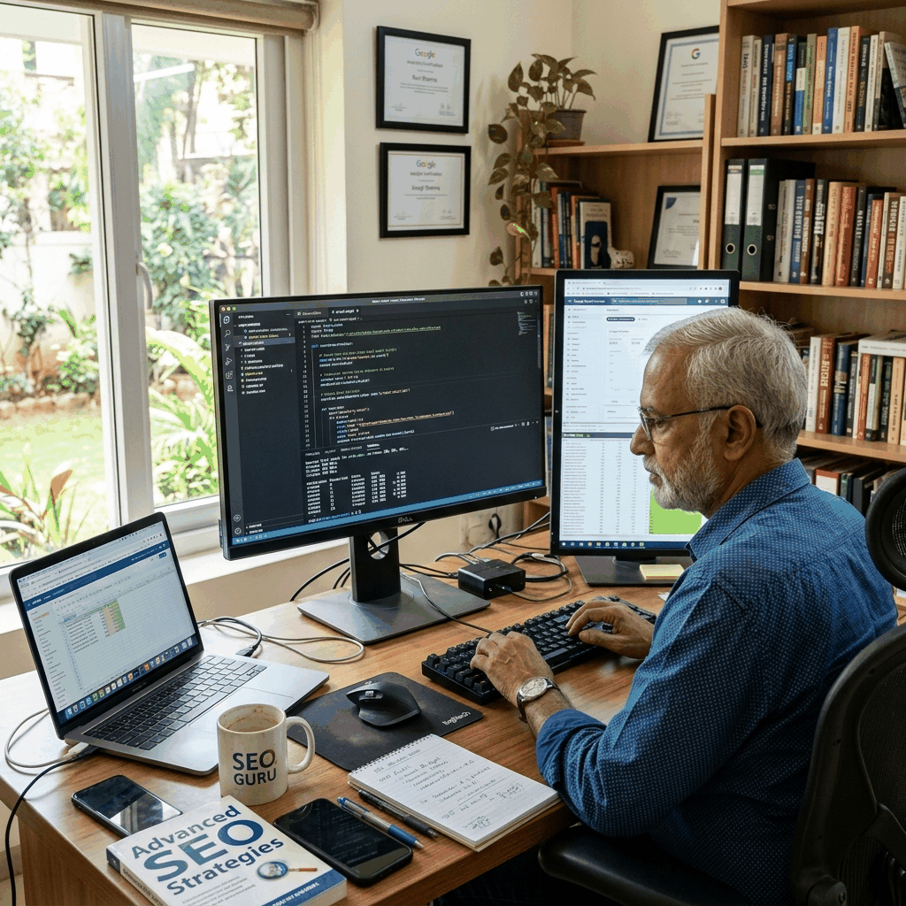

Data-driven SEO engineering by Aji Paul. We use custom Python diagnostics and Semrush essentials to rebuild your organic visibility.
Get Technical Audit
To rank consistently for competitive terms like seo expert india, websites must move beyond superficial content adjustments. Search algorithms evaluate codebase cleanliness, semantic signal clarity, and absolute redirect efficiency. Under the guidance of founder Aji Paul, our Kochi, Kerala-based team structures websites to meet these strict search diagnostics. We serve businesses targeting search traffic across India, the United States, Canada, and the United Kingdom, delivering customized search engine visibility solutions.
Our team analyzes site performance, establishing clear logical hierarchies. We verify that pages include LSI terms including freelance seo expert in kerala, seo expert kerala, python seo script check, crawl status audits. This ensures search engine crawlers can index your commercial offerings without encountering index blockages or parameter traps. Our technical methodology focuses on building organic traffic pathways, establishing authority for freelance technical SEO consultancy led by Aji Paul.
Our audits analyze indexing errors, duplicate path loops, javascript payload weights, and server parameters. We clean up robots.txt rules and configure canonical tags to pass search authority directly to your priority landing pages.
Search bots allocate a specific crawl budget to every domain. If a website wastes this budget on redirect hops, dynamic tracking links, or broken canonical links, high-value page updates will delay in search listings. We implement absolute canonical tags, resolving index fragmentation. Our engineers specialize in writing custom Python crawl scripts, resolving dynamic route issues, and checking index status across multiple domains. We audit sitemap structures, remove render-blocking assets, and optimize directory structures.
Additionally, we check server logs using tools like Python bs4 and requests scripts, google indexing api integrations, semrush keyword trackers to trace search bot paths. This allows us to resolve issues like server response lag and coordinate redirects. By consolidating scripts and setting up cache controls, we improve rendering paths, helping crawling bots access your content efficiently. Our technical modifications ensure that sitemaps and robots.txt files align, pointing search crawlers to your transaction pages.
Unique visual grids designed to pass search relevance checkpoints for: seo expert india.
To build search authority, websites must address technical bottlenecks. We verify canonical tag declarations, clear sitemaps inconsistencies, optimize index setups, and align metadata. By mapping related terms like freelance seo expert in kerala, seo expert kerala, python seo script check, crawl status audits in headers and page copy, we ensure your page matches intent signals. Additionally, we integrate schema JSON-LD, providing crawling bots with verified context to index your site safely.
Providing search engines with direct answers for conversational and transactional queries.
A: The primary focus is aligning website assets to rank for terms like seo expert india. We address issues like redirect chains, sitemaps errors, canonical loops, and load times. This channels search crawlers directly to your commercial content.
A: We audit sitemaps, analyze robots.txt directives, and set up canonical pointers to resolve index traps on duplicate parameters. This directs search crawlers to your transaction-oriented categories.
A: Yes. We audit DOM sizes, script weights, dynamic load routes, and image file scaling to meet Core Web Vitals targets, helping pages load fast on mobile devices.
A: We check accessibility standards, sitemaps directories, redirect codes, and logs using tools like Python bs4 and requests scripts, google indexing api integrations, semrush keyword trackers to trace search bot paths.
If your business depends on organic search traffic, our technical SEO configurations in Kochi, Kerala, ensure your pages satisfy Google's criteria.
Consult with our technical SEO and web development engineers. Get a roadmap for scaling your business search rankings.